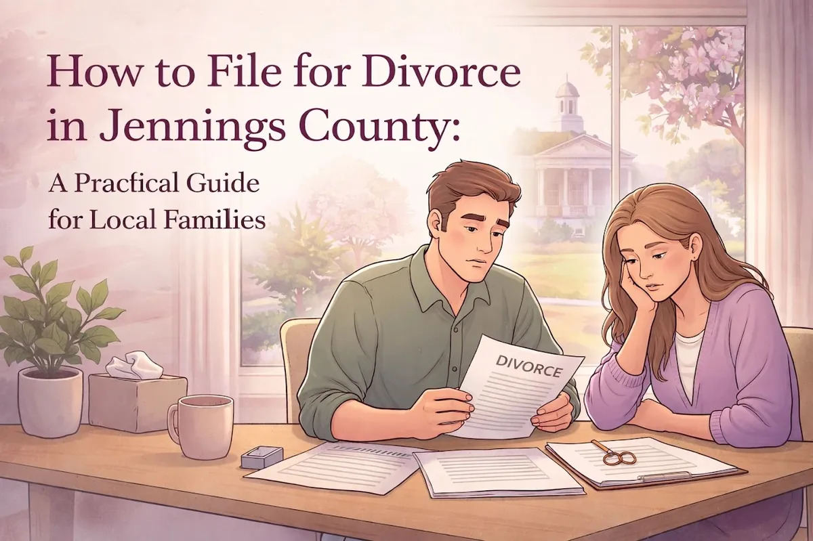
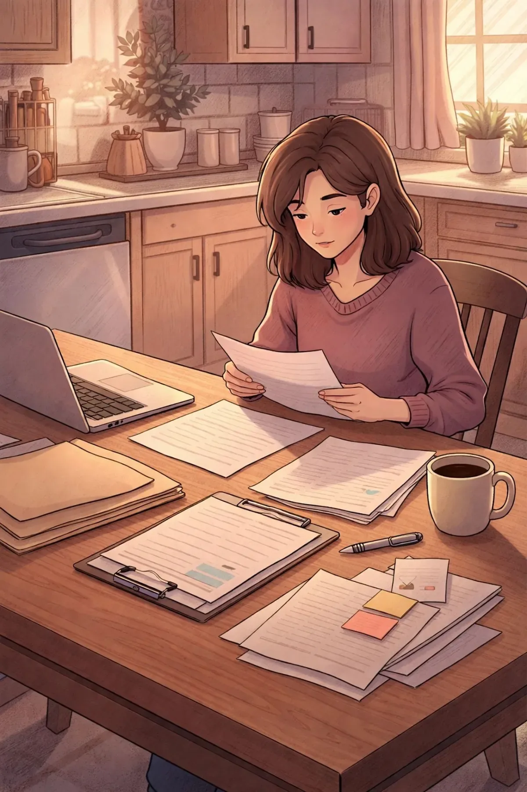

How to File for Divorce in Jennings County: A Practical Guide for Local Families

Let's be honest, nobody dreams about filing for divorce. If you're reading this, you're probably going through one of the toughest seasons of your life. Maybe you've been putting this off for months, or maybe the decision was made for you. Either way, you deserve to know exactly what to expect when you walk into the Jennings County Courthouse.
This guide breaks down how to file for divorce in Indiana, specifically for folks here in Jennings County. We'll cover the practical stuff: where to go, what papers you need, how long it takes, and what decisions you'll have to make along the way. No legal jargon, no runaround, just straightforward answers for real families in North Vernon, Vernon, Commiskey, Hayden, Scipio, and everywhere in between.
First Things First: Do You Meet the Residency Requirements?
Before you can file anything, Indiana requires that you meet certain residency rules. This isn't complicated, but it's non-negotiable:
At least one spouse must have lived in Indiana for a minimum of 6 months
You (or your spouse) must have lived in Jennings County for at least 3 months
If you just moved to the area, you might need to wait a bit before you can officially file here. But if you've been a Jennings County resident for a while, you're good to go.
Gathering Your Paperwork
Divorce involves a fair amount of paperwork. Here's the basic list of forms you'll need to get started:
Petition for Dissolution of Marriage (this is the main document that officially asks the court to end your marriage)
Summons (this notifies your spouse that you've filed)
Financial Declaration (a snapshot of your income, expenses, assets, and debts)
Child Support Obligation Worksheet (if you have kids under 18)
You can find most of these forms through Indiana Legal Help online.

Where Do You Actually File?
All divorce paperwork in Jennings County gets filed at the Jennings Superior Court, located at:
24 North Pike Street, Vernon, Indiana 47282
You'll submit your completed Petition and supporting documents to the Clerk's Office. There's a filing fee involved (it varies, so call ahead or check their website for current amounts). If money is tight, you can request a fee waiver, the Clerk's Office can tell you how to apply for one.
Pro tip: Bring copies of everything. The court keeps the originals, and you'll want your own set for your records.
Serving Your Spouse
Once you've filed, you can't just text your spouse and say, "Hey, I filed for divorce." Indiana law requires formal service of process, basically, official notification that legal proceedings have begun.
There are a few ways to do this:
Certified mail sent to your spouse's last known address
Private process server
Jennings County Sheriff's Department
After your spouse has been served, you'll need to file proof of service with the court. This shows the judge that your spouse knows about the case and has a chance to respond.
If your spouse is cooperative, this part is usually pretty smooth. If they're avoiding you or you don't know where they live, things can get trickier, and that's where having a local attorney really helps.
The 60-Day Waiting Period
Here's something a lot of people don't realize: Indiana has a mandatory 60-day waiting period. That means even if you and your spouse agree on everything, the court cannot finalize your divorce until at least 60 days after you file.
This waiting period gives both parties time to:
Respond to the petition (your spouse typically has 20-30 days)
Work out temporary arrangements for kids, bills, and living situations
Negotiate a settlement agreement
Think of it as a cooling-off period. The courts want to make sure nobody is rushing into a life-changing decision.
What Needs to Be Decided?
Every divorce requires you to sort out a few key issues. Even if things are amicable, you'll need to come to an agreement (or let a judge decide) on:
If you have minor children:
Legal custody (who makes major decisions about education, healthcare, religion)
Physical custody (where the kids live day-to-day)
Parenting time (visitation schedule for the non-custodial parent)
Child support (calculated using Indiana's child support guidelines)
For all divorces:
Division of property (house, cars, bank accounts, retirement funds, debts)
Spousal maintenance (sometimes called alimony, not automatic in Indiana, but possible)
If you and your spouse can agree on all of this, you can submit a settlement agreement to the court and avoid a trial altogether. If you can't agree? The case moves into discovery, possibly mediation, and potentially a court hearing where a judge makes the final call.
Contested vs. Uncontested: What's the Difference?
You'll hear these terms thrown around a lot:
Uncontested divorce. You and your spouse agree on everything, custody, property, support. The process is faster, cheaper, and less stressful.
Contested divorce. You disagree on one or more major issues. This means more court appearances, more negotiation, and usually higher costs.
Most people want an uncontested divorce, but emotions run high during this process. What starts as "we agree on everything" can quickly turn into a disagreement about who gets the house or how holidays are split with the kids.
Why a Local Attorney Makes a Difference
Can you file for divorce on your own? Technically, yes. Indiana allows you to represent yourself (called "pro se"). The forms are available online, and the Clerk's Office can point you in the right direction as to how to file.
But here's the thing: divorce isn't just paperwork. It's about protecting your rights, your kids, and your future. One wrong checkbox or missing document can delay your case by weeks. And if your spouse has an attorney and you don't? You could end up at a serious disadvantage.
Working with one of the divorce lawyers in Jennings County means you have someone in your corner who:
Knows the local court procedures inside and out
Can anticipate problems before they happen
Listens to your situation and gives you real options: not cookie-cutter advice
Handles the legal details so you can focus on your family
At Chris Doran Law LLC, we take a personal approach. We're a small town firm, which means you're not just a case number. When you call, you talk to someone who actually knows your name and your situation. We listen to what you have to say and help you understand your choices: without pressuring you into anything.
Ready to Take the Next Step?
Filing for divorce is never easy, but you don't have to figure it out alone. If you're in Jennings County and you're thinking about your options, we're here to help you navigate the process with as little stress as possible.
Whether you're in North Vernon, Vernon, Commiskey, Hayden, or Scipio: we serve families throughout the county and can meet you where you are.
Have questions? Want to talk through your situation? Reach out to Chris Doran Law LLC for a conversation about what comes next. No pressure, no judgment: just practical guidance from a local attorney who listens.